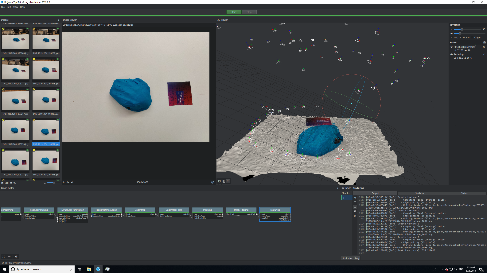
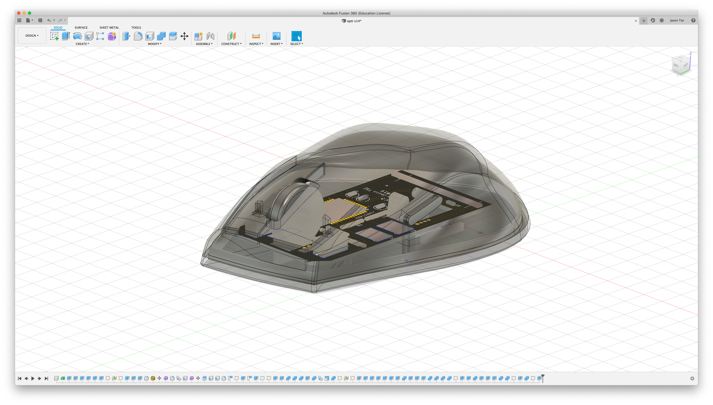
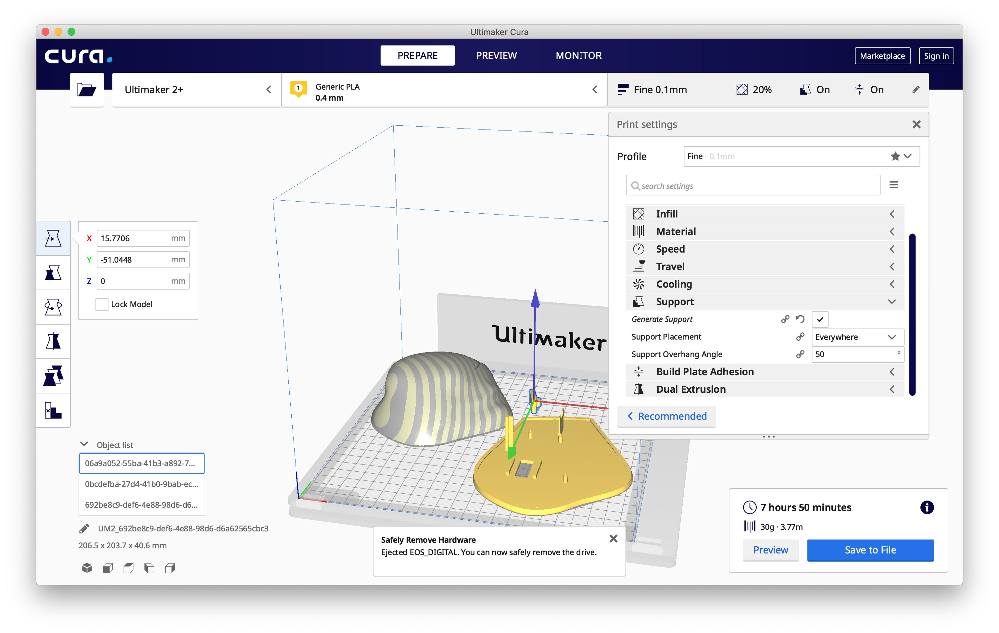
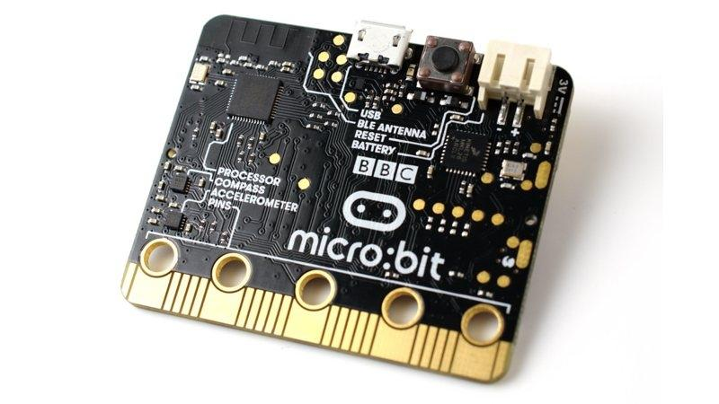
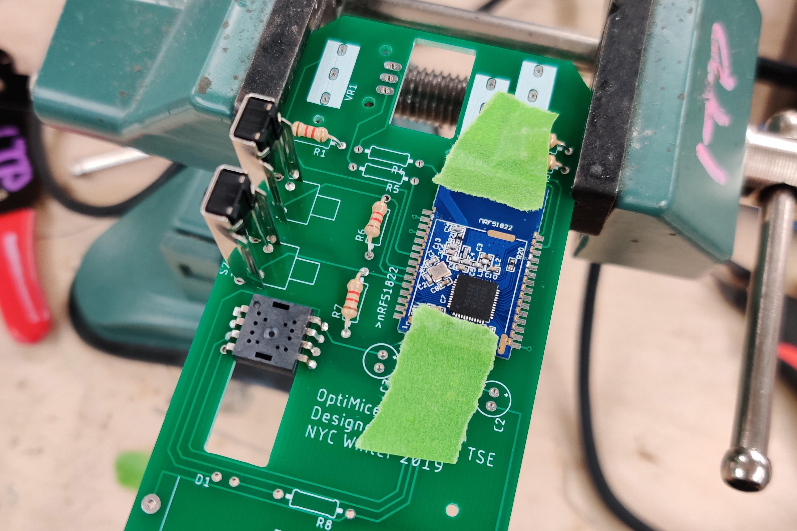
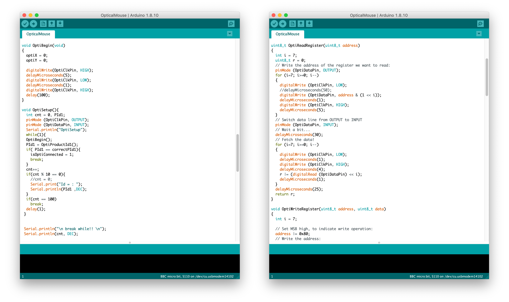
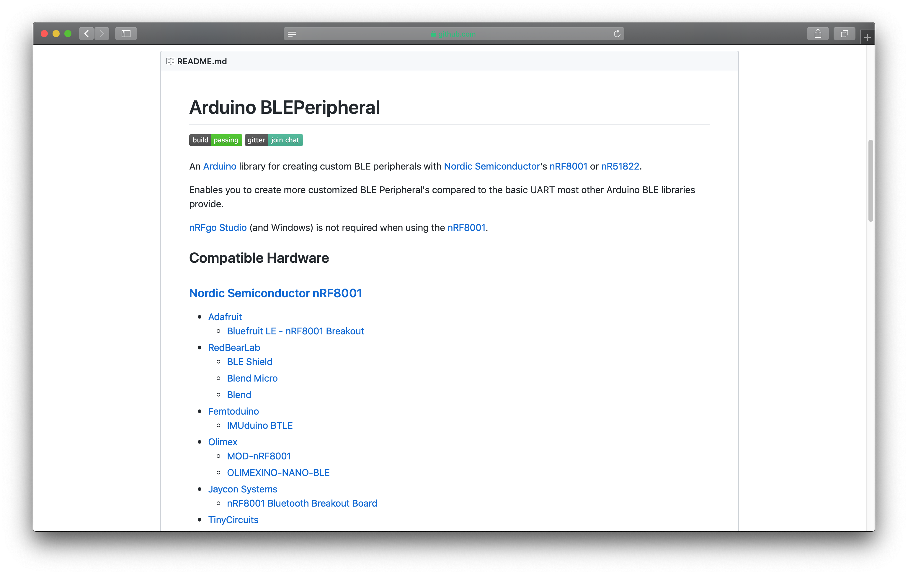

🖱 OptiMice
"OptiMice is a unique customer experience that professional computer peripheral users would get a tailor-made, ergonomic, customized, programmable computer mouse designed and manufactured, and finally shipped to customers’ hands."
The Problem
“Before you buy a mouse, you wanna make sure it fits your hand size and your grip. And Zowie is doing something really really cool here with making these mouse fitting kits.”
- randomfrankp, Tech YouTuber
The fitting kit concept is essentially sending a total of 10 mice inside a box, and return the rest you don’t want to keep back to Zowie. To me it isn’t that “cool”.
Being a computer peripheral enthusiast, I bought some of the most premium mice that companies offer, just to simply make my life easier. But one time, I purchased a 4 dollar ergonomic vertical mouse, surprisingly it fits better than the 100 dollar mouse which earns “the best mouse on the market” title.
The idea of “form over function” may sometimes be true. The mouse out of all computer peripherals is the one only peripheral that actually is dependent on one’s specific grip and hand size. Despite premium mice are advertised as ergonomic and programmable, unlike a customized mechanical keyboard which can be customised with different switches, keycaps, even the PCB design and frame to ultimately accommodate one’s specific needs, the degree of personalization of a mouse is always relatively limited.
The Solution
When a mouse is one’s everyday essential, especially for professional computer users, like video editors, programmers, they will invest in a personalised computer mouse that perfectly fits their hands and preferences, without a bit of compromise, just like a tailor made suit.
The Road Map
1. Web Platform
The business will be web based. Ordering, configuration, sharing and etc happen here.
2. Ship modeling kit
Customers will pay for a deposit to get a set of modeling kit.
3. Model hand sculpt
Customers will sculpt the mouse with the perfect hand grip using clay and mouse dummy which came with the kit.
4. Photo taking
With just a cellphone camera, customers will take around 50-100 photos of the sculpt in different perspective.
5. Upload photo
The photos will be uploaded to the website server for further process.
6. Photogrammetry
Photos will be processed with photogrammetry technology powered by machine learning algorithm.
7. 3D Sculpt Generated
The 3D model of the scan will be reconstructed with a high fidelity.
8. 3D Mouse Model & PCB Design
Based on the 3D sculpt, a 3D mouse model and PCB design will be generated.
9. User Order Customization
Customers can tweak the design and features of their OptiMice during the ordering process, e.g. wired/wireless, extra buttons, types of switches, lighting, etc.
10. Fabrication
The shell of the OptiMice will be 3D printed and PCB will be manufactured, then get assembled and packaged.
11. Delivery
OptiMice will be delivered to customers' hands safe and sound.
12. Companion Software on Web
Customers will connect OptiMice to the computer, configure and program it on the web platform.
The Process
A. Fabrication
i. Photogrammetry

Play-doh is applied on a dummy mouse. Then it is modeled to conform my own hand size and grip.

Meshroom, a 3D Reconstruction Software powered by AliceVision reconstructs the sculpt digitally by processing hundreds of photos taken from different perspective.
ii. Industrial Design
The 3D model of the mouse is being modeled digitally within Fusion 360, again conforming the original 3D scan constructed with photogrammetry pipeline.
Alongside, internal structures are incorporated into the design.
iii. 3D Printing
Sliced in Cura, OptiMice is ready to be formed into a reality.

Exploiting the beauty of 3D print, essentially the case of a mouse can be printed in possibly any size, any color and any material.

B. Electronics
i. Prototyping

As the mouse should feature wireless connectivity, the BBC micro:bit became the choice of prototyping platform as it contains the nRF51822 Bluetooth Low Energy SoC from Nordic Semiconductor.

Get the core components, the PAW3205DB-JT, the optical sensor manufactured by PixArt, and also the rotary encoder working.
ii. PCB Design
The original circuit prototype is translated to Eagle. A schematic is being finalized and the actual PCB board is designed considering the actual form factor of a mouse.
iii. Program SoC

Via a DAPLink programmer, the original program that lived on the micro:bit was migrated to the actual nRF51822 module.
iv. Assembly

After a week long wait, the PCB is manufactured and shippped from ShenZhen to NYC. Time to get the board assembled.

C. Programming
i. Serial Interface

Via the Serial Interface of PAW3205, Delta_X and Delta_Y is obtained.
ii. BLE HID
Using an open source library, I tested and coded the BLE HID service conveniently, despite there are a handful of bugs within the library that I have to debug and bypass.
Working In Progress
- Configuration over Bluetooth via Web Browser
- Program functions of buttons, e.g. system and media control
- Configure speed, scroll wheel direction, etc
- Web platform
- E-commerce capability
- Photogrammetry Reconstruction server
- 3D mouse model preview for customization during ordering